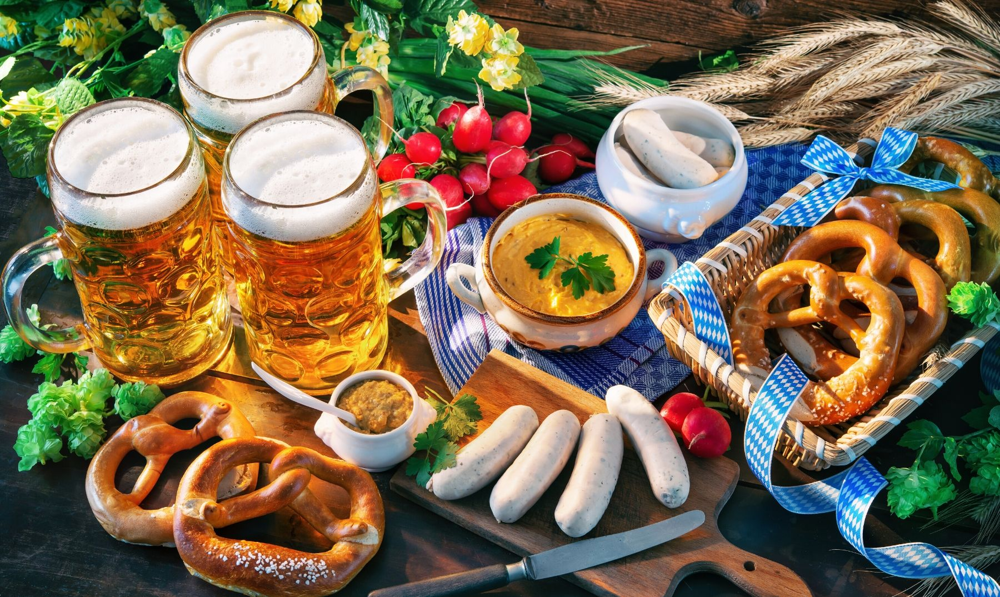
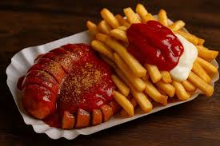
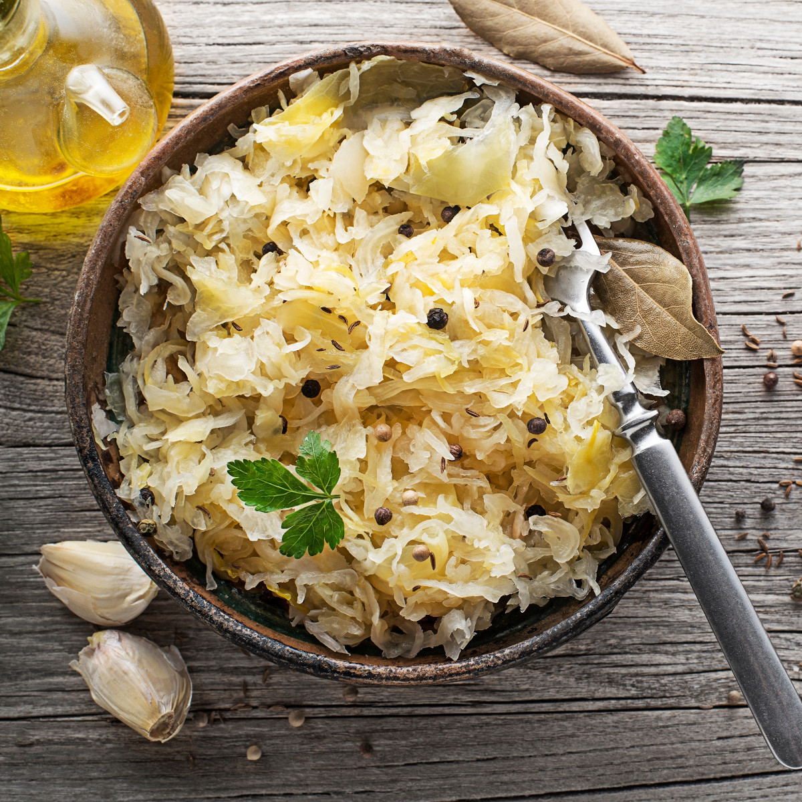

Gastronomy
German cuisine is characterized by hearty and comforting dishes, with a strong use of meats such as pork, sausages, potatoes, and bread, as well as traditional recipes that vary greatly depending on the region. Among the most representative foods are sausages, schnitzel, sauerkraut, and pork knuckle, often served with potato salads, knödel, or spätzle. The culture of bread and beer is fundamental, and classic desserts like Black Forest cake and apple strudel also stand out, reflecting a simple, abundant cuisine closely tied to local customs.




baviera
Schnitzel
Currywurst
Sauerkraut
Isabella Ibarra. Aranza Contretas. Mariana Orozco. Ximena Rodriguez. Rebeca Anahi. Maria Fernanda.
Todos los derechos reservados.2026